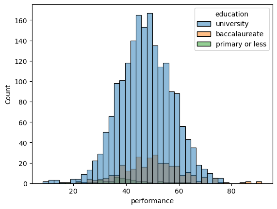
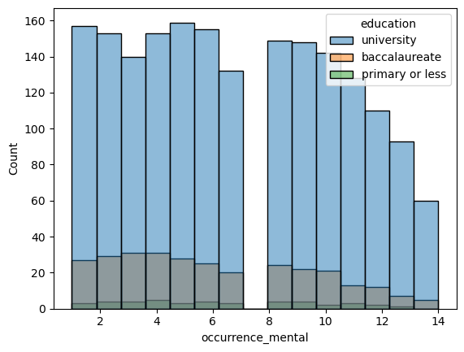
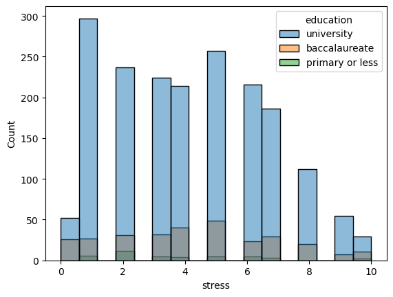
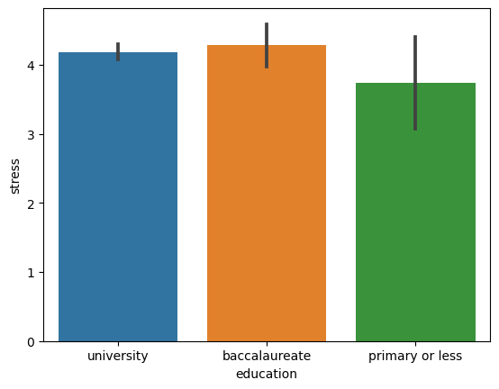
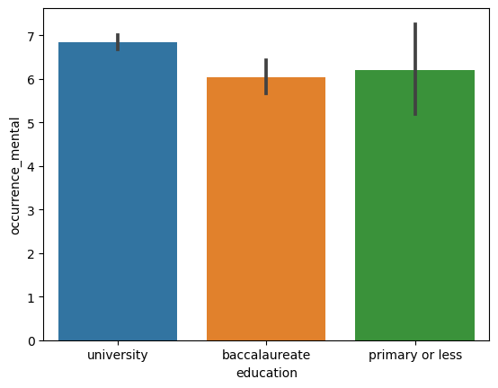
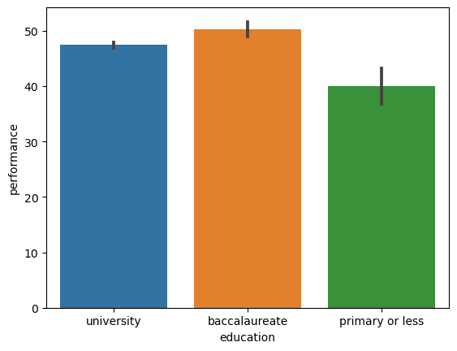
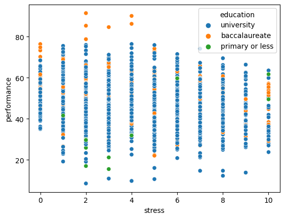
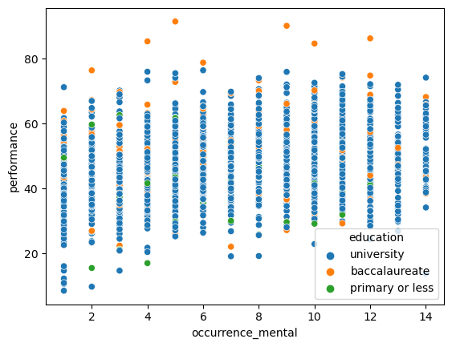

import pandas as pd
import numpy as np
import seaborn as sns
import matplotlib.pyplot as plt
data = pd.read_csv('data/CitieSHealth_BCN_DATA_PanelStudy_20220414_Clean.csv')
data
| no2 | pm25 | black carbon | performance | occurrence_mental | wellbeing | stress | sleep quality | gender | diet | alcohol | drug_use | education | access_greenbluespaces | smoke | age | |
|---|---|---|---|---|---|---|---|---|---|---|---|---|---|---|---|---|
| 0 | 28.54 | 8.16 | 0.50 | 51.24 | 2 | 8 | 5 | 8 | Female | Yes | No | No | university | Yes | No | 37 |
| 1 | 44.51 | 13.38 | 1.51 | 56.01 | 10 | 9 | 8 | 9 | Female | Yes | Yes | No | university | Yes | Yes | 28 |
| 2 | 33.81 | 16.53 | 1.17 | 58.18 | 14 | 3 | 5 | 2 | Female | Yes | No | No | university | Yes | No | 29 |
| 3 | 37.86 | 15.67 | 1.21 | 71.48 | 12 | 9 | 6 | 2 | Female | No | Yes | No | university | Yes | No | 33 |
| 4 | 37.82 | 18.45 | 1.56 | 46.05 | 9 | 3 | 5 | 10 | Female | Yes | Yes | No | baccalaureate | No | No | 45 |
| ... | ... | ... | ... | ... | ... | ... | ... | ... | ... | ... | ... | ... | ... | ... | ... | ... |
| 2211 | 33.99 | 13.17 | 1.19 | 61.69 | 13 | 7 | 2 | 8 | Female | No | No | No | university | No | Yes | 31 |
| 2212 | 49.05 | 21.90 | 1.78 | 29.86 | 1 | 8 | 10 | 7 | Female | No | Yes | No | university | Yes | No | 39 |
| 2213 | 17.82 | 11.52 | 0.44 | 67.36 | 12 | 7 | 1 | 7 | Female | No | No | No | university | No | Yes | 31 |
| 2214 | 34.85 | 13.70 | 0.83 | 56.75 | 8 | 7 | 5 | 9 | Female | No | No | No | university | Yes | No | 39 |
| 2215 | 28.41 | 10.10 | 1.02 | 36.10 | 5 | 8 | 9 | 7 | Female | Yes | No | No | university | Yes | No | 46 |
2216 rows × 16 columns
sns.histplot(x = 'performance', hue = 'education', data = data)
plt.savefig('outputs/histogram_for_performance')

sns.histplot(x = 'occurrence_mental', hue = 'education', data = data)
plt.savefig('outputs/histogram_for_occurrence_mental')

sns.histplot(x = 'stress', hue = 'education', data = data)
plt.savefig('outputs/histogram_for_stress')

sns.barplot(x = 'education', y = 'stress', data = data)
plt.savefig('outputs/barplot_for_stressVsEducation')

sns.barplot(x = 'education', y = 'occurrence_mental', data = data)
plt.savefig('outputs/barplot_for_occurrenceVsEducation')

sns.barplot(x = 'education', y = 'performance', data = data)
plt.savefig('outputs/barplot_for_performanceVsEducation')

sns.scatterplot(x = 'stress', y = 'performance', hue = 'education', data = data)
plt.savefig('outputs/scatterplot_for_stressVsperformance')

sns.scatterplot(x = 'occurrence_mental', y = 'performance', hue = 'education', data = data)
plt.savefig('outputs/scatterplot_for_occurrenceVsperformance')

average_mental_health_issue_occurence_univ = np.mean(data[data['education'] == 'university']['occurrence_mental'])
average_mental_health_issue_occurence_bac = np.mean(data[data['education'] == 'baccalaureate']['occurrence_mental'])
average_mental_health_issue_occurence_pri_less = np.mean(data[data['education'] == 'primary or less']['occurrence_mental'])
print('Average Mental Health Issue Occurence for people with University education is {:0.3f}'.format(average_mental_health_issue_occurence_univ))
print('Average Mental Health Issue Occurence for people with Baccalaureate education is {:0.3f}'.format(average_mental_health_issue_occurence_bac))
print('Average Mental Health Issue Occurence for people with Primary or less education is {:0.3f}'.format(average_mental_health_issue_occurence_pri_less))
Average Mental Health Issue Occurence for people with University education is 6.847
Average Mental Health Issue Occurence for people with Baccalaureate education is 6.034
Average Mental Health Issue Occurence for people with Primary or less education is 6.214
average_stress_univ = np.mean(data[data['education'] == 'university']['stress'])
average_stress_bac = np.mean(data[data['education'] == 'baccalaureate']['stress'])
average_stress_pri_less = np.mean(data[data['education'] == 'primary or less']['stress'])
print('Average Stress Level for people with University education is {:0.3f}'.format(average_stress_univ))
print('Average Stress Level for people with Baccalaureate education is {:0.3f}'.format(average_stress_bac))
print('Average Stress Level for people with Primary or less education is {:0.3f}'.format(average_stress_pri_less))
Average Stress Level for people with University education is 4.185
Average Stress Level for people with Baccalaureate education is 4.285
Average Stress Level for people with Primary or less education is 3.738
average_performance_univ = np.mean(data[data['education'] == 'university']['performance'])
average_performance_bac = np.mean(data[data['education'] == 'baccalaureate']['performance'])
average_performance_pri_less = np.mean(data[data['education'] == 'primary or less']['performance'])
print('Average Stroop Test score for people with University education is {:0.3f}'.format(average_performance_univ))
print('Average Stroop Test score for people with Baccalaureate education is {:0.3f}'.format(average_performance_bac))
print('Average Stroop Test score for people with Primary or less education is {:0.3f}'.format(average_performance_pri_less))
Average Stroop Test score for people with University education is 47.408
Average Stroop Test score for people with Baccalaureate education is 50.281
Average Stroop Test score for people with Primary or less education is 39.928
def hypothesis_testing(educ1, educ2, column, data, observed_diff, cutoff):
diffs = []
for i in np.arange(20000):
data['shuffled_education'] = data['education'].sample(frac = 1, replace = False).values
diff = np.abs(np.mean(data[data['shuffled_education'] == educ1][column]) - np.mean(data[data['shuffled_education'] == educ2][column]))
diffs += [diff]
data = data.drop(['shuffled_education'], axis = 1)
pvalue = sum(observed_diff <= diffs) / len(diffs)
if pvalue <= cutoff:
print('P value is {:0.3f}'.format(pvalue) + '.' + ' ' + 'Thus, Reject the Null Hypothesis')
else:
print('P value is {:0.3f}'.format(pvalue) + '.' + ' ' + 'Thus, Fail to Rejct the Null Hypothesis')
observed_diff = np.abs(average_mental_health_issue_occurence_univ - average_mental_health_issue_occurence_bac)
hypothesis_testing('university', 'baccalaureate', 'occurrence_mental', data, observed_diff, 0.05)
P value is 0.001. Thus, Reject the Null Hypothesis
observed_diff = np.abs(average_mental_health_issue_occurence_univ - average_mental_health_issue_occurence_pri_less)
hypothesis_testing('university', 'primary or less', 'occurrence_mental', data, observed_diff, 0.05)
P value is 0.279. Thus, Fail to Rejct the Null Hypothesis
observed_diff = np.abs(average_mental_health_issue_occurence_bac - average_mental_health_issue_occurence_pri_less)
hypothesis_testing('baccalaureate', 'primary or less', 'occurrence_mental', data, observed_diff, 0.05)
P value is 0.770. Thus, Fail to Rejct the Null Hypothesis
observed_diff = np.abs(average_stress_univ - average_stress_bac)
hypothesis_testing('university', 'baccalaureate', 'stress', data, observed_diff, 0.05)
P value is 0.526. Thus, Fail to Rejct the Null Hypothesis
observed_diff = np.abs(average_stress_univ - average_stress_pri_less)
hypothesis_testing('university', 'primary or less', 'stress', data, observed_diff, 0.05)
P value is 0.255. Thus, Fail to Rejct the Null Hypothesis
observed_diff = np.abs(average_stress_pri_less - average_stress_bac)
hypothesis_testing('primary or less', 'baccalaureate', 'stress', data, observed_diff, 0.05)
P value is 0.183. Thus, Fail to Rejct the Null Hypothesis
observed_diff = np.abs(average_performance_univ - average_performance_bac)
hypothesis_testing('university', 'baccalaureate', 'performance', data, observed_diff, 0.05)
P value is 0.000. Thus, Reject the Null Hypothesis
observed_diff = np.abs(average_performance_univ - average_performance_pri_less)
hypothesis_testing('university', 'primary or less', 'performance', data, observed_diff, 0.05)
P value is 0.000. Thus, Reject the Null Hypothesis
observed_diff = np.abs(average_performance_bac - average_performance_pri_less)
hypothesis_testing('baccalaureate', 'primary or less', 'performance', data, observed_diff, 0.05)
P value is 0.000. Thus, Reject the Null Hypothesis